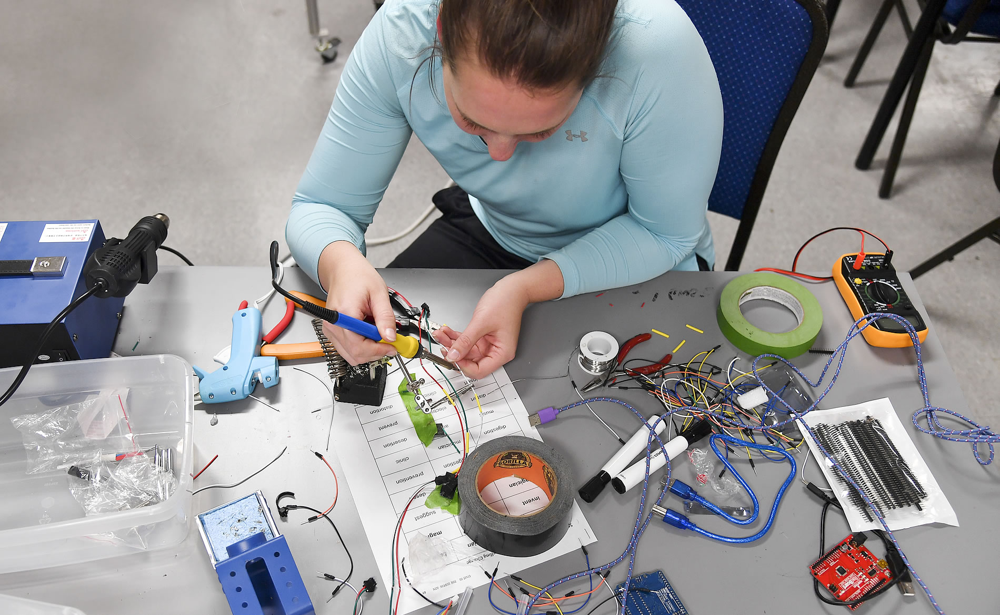

School of Creative Technologies
Address: Campus Box 5750
Phone: (309) 438-2875
Director: Colby Jennings
Degrees Offered: B.A., B.S.
Major in Creative Technologies
The interdisciplinary Creative Technologies major emphasizes design and practice in the integration of digital technologies and the fine arts. Where creativity excels.